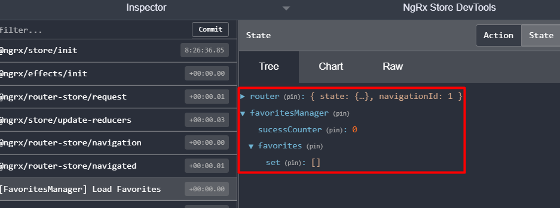
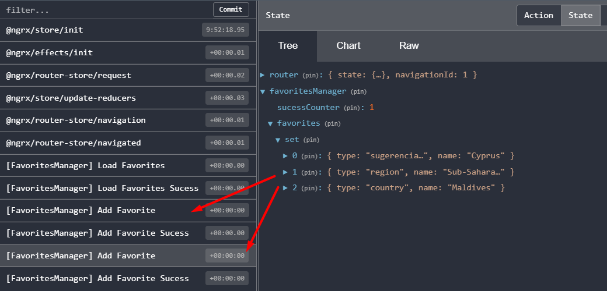
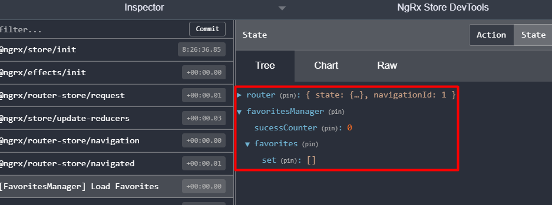
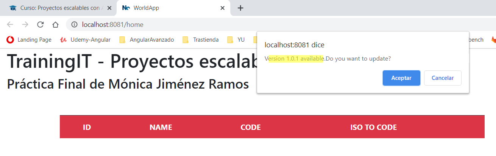

creada una app : app-world
yarn start:world-app
creadas 3 librerias :
1) domain : para crear las interfaces de los objetos que utilizamos (region, pais)
2) data : para llamar por HTTP al banco de paises
- 1.servicio que recupera todas las regiones http://api.worldbank.org/v2/region/?format=json
- 2.servicio que recupera los paises de una region http://api.worldbank.org/v2/region/ECS/country?per_page=1000&format=json
- 3.servicio que recupera la info de un pais http://api.worldbank.org/V2/country/ESP?format=json
3) ui: para crear los componentes que mostraran las regiones, paises..
- -componente RegionsComponent para la home
- -componente RegionItemComponent para la pagina de 1 region
- -componente CountryItemComponent para la página de 1 pais
test e2e de home --> OK
yarn e2e:world-app
Nota: no funcionaba request HTTP debido al proxy de la VPN de empresa:
SIN VPN:

CON VPN:


test unitario --> OK.
nota: no funcionaba jest. solucionado: yarn add --dev jest
- 1. AppComponent -> yarn test:world-app
- 2. RegionsComponent -> yarn test:common-ui
- 3. RegionsService -> yarn test:common-data
Detección de cambios OnPush y Container/Presenter
cdr.detectChanges()
- En RegionsComponent, que muestra la tabla con las regiones, hacemos cdr.detectChanges() despues de llamada HTTP a la API(asíncrona).
- En RegionItemComponent, que muestra los paises de una region, hacemos cdr.detectChanges() despues de llamada HTTP a la API(asíncrona)
- En CountryItemComponent, que muestra los datos de un pais, hacemos cdr.detectChanges() despues de llamada HTTP a la API (asíncrona)
Historico de navegacion
Importante: el histórico de navegación no tiene nada que ver con los estados y navegaciones NgRx, hice estos componententes y funcionalidades antes de empezar NgRx.
Utilizamos el servicio HistoryService con dos objetos BehaviorSubject para actualizacion onPush del historial:
- 1- contador de navegaciones (mostrado en AppComponent, esquina superior dcha). Comportamiento: navegar a cualquier pagina (home, region, pais) incrementa el contador , y volver hacia atrás también. Sólo no cuenta como navegacion entrar/salir del historial y favoritos.
- 2- historial : array de NavigationItem. Comportamiento: las páginas de Home, Region y Pais, utilizan un objeto BehaviorSubject[] para almacenar items de navegacion pada vez que se navega hacia una de estas páginas
Componente Container Historial y presentadores:
- Container -> HistoryComponent : escucha eventos para borrar entrada del historial
- Presenter -> HistoryPresenter: muestra el historial y emite eventos OnPush para borrar una entrada del historial. El borrado se realiza en el Container.
NGRX
- Instalación de NgRx en la app principal
- Creado un nuevo módulo Favorites con componente FavoriteComponent .
- Cuando se inicializa el componente, llama a servicio:
- 1) FavoriteService.loadFavorites: hace dispatch de Action LoadFavorites ->Reducer devuelve estado inicial.

-> onSucess (Effect) : incrementa un sucessContador y añade una sugerencia a un array los favoritos. Por aplicarle una lógica cualquiera –en el reducer solo se pueden usar funciones puras y por eso usamos un effect-, dependiendo de la hora del día:- Antes de las 12AM: sugerencia = Chipre
- De 12 a 18: sugerencia = Andorra
- A partir de las 18: sugerencia = región Latinoamérica
- 2) FavoriteService.addFavorites (x2 veces) ->distpach Action addFavorite -> Reducer modfica el estado

-> onSucess (Effect) devuelve Action Actions.addFavoritesSuccessm-> reducer no modifica el estado
- 1) FavoriteService.loadFavorites: hace dispatch de Action LoadFavorites ->Reducer devuelve estado inicial.

Configuracion PWA --> OK
yarn start:world-app:pwa //configurado para hacer build y levantar server
-
Caché

-
Actualizacion de version
